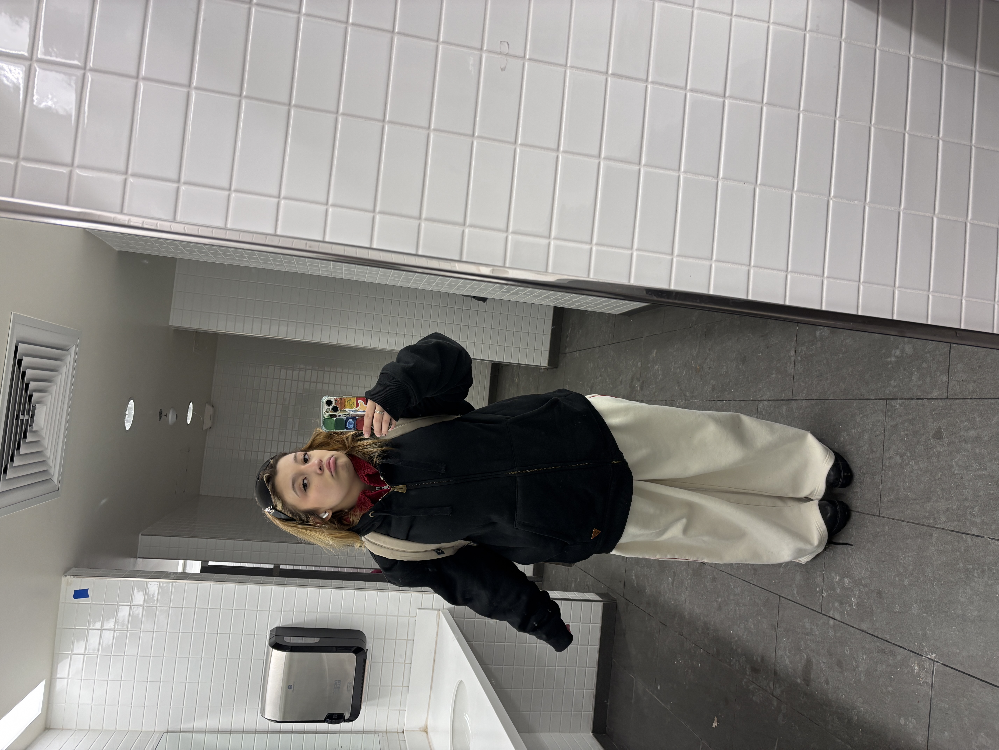

Fashion
Fashion has always been a significant part of my life, allowing me to express myself creatively and confidently. I find joy in experimenting with different styles, colors, and trends to create unique looks that reflect my personality.
Welcome to the Fashion section of my portfolio! Here, I showcase my passion for style and design through various fashion projects and inspirations.
I tend to use things like pinterest to build my outfits.
✦ Fashion Inspiration
I find a lot of my fashion inspiration from celebrities, influencers, and fashion icons. I love to see how they put together their outfits and incorporate different trends into their looks.
Outfits Of The Week
Some people do "ootd" posts, but me personally I like to do "ootw" posts where I show off my outfits throught out the week!

